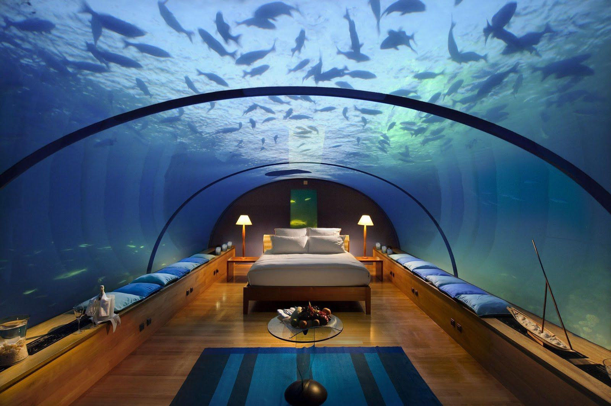
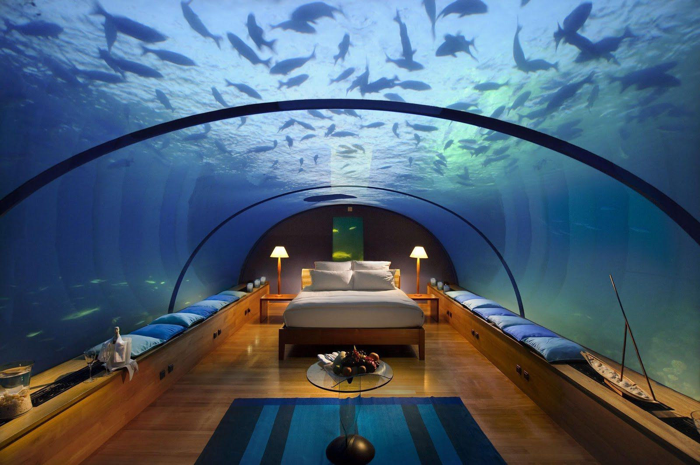

sobre nos
Se você sempre sonhou em explorar as profundezas do oceano e testemunhar a beleza incomparável das maravilhas subaquáticas, a TrailerMarine está aqui para transformar seu sonho em realidade! Somos uma empresa pioneira em viagens de submarino, oferecendo uma experiência única e inesquecível para os amantes da aventura e da natureza.
A TrailerMarine é mais do que uma simples empresa de turismo - somos uma janela para um mundo subaquático incrível e repleto de mistérios. Com uma equipe altamente treinada e uma frota de submarinos modernos e seguros, levamos você em jornadas subaquáticas de tirar o fôlego, proporcionando uma perspectiva totalmente nova do nosso planeta.
Nossos roteiros abrangem destinos deslumbrantes ao redor do globo, cuidadosamente selecionados para proporcionar uma variedade de paisagens subaquáticas espetaculares. Imagine nadar ao lado de coloridos corais, explorar recifes vibrantes, mergulhar em naufrágios históricos e encontrar criaturas marinhas fascinantes, como golfinhos, tartarugas e cardumes exuberantes.
A segurança é nossa prioridade número um. Nossos submarinos são projetados com a mais recente tecnologia de ponta e passam por rigorosas inspeções e manutenções regulares. Além disso, nossa equipe de especialistas em mergulho e resgate está sempre presente para garantir que você esteja seguro e confortável durante toda a sua jornada submarina.
Na TrailerMarine, acreditamos na sustentabilidade e na preservação dos oceanos. Trabalhamos em estreita colaboração com organizações ambientais e locais para promover práticas de turismo responsável e minimizar nosso impacto nos ecossistemas marinhos. Também incentivamos a conscientização e a educação ambiental, para que cada um de nossos viajantes possa se tornar um defensor dos oceanos.
Nossos pacotes de viagem são personalizados para atender aos interesses e necessidades individuais de cada cliente. Seja um explorador solo em busca de aventura, uma família em busca de uma experiência educativa ou um casal em uma escapada romântica, temos opções de viagem que se adequam a todos os perfis.
A TrailerMarine convida você a embarcar em uma jornada inigualável pelos mares. Explore as profundezas azuis, descubra segredos ocultos e crie memórias duradouras em uma experiência verdadeiramente extraordinária. Entre em contato conosco hoje mesmo e deixe-nos levá-lo a uma aventura subaquática que você jamais esquecerá!


 
